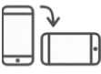
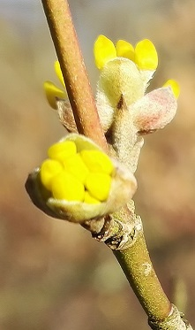
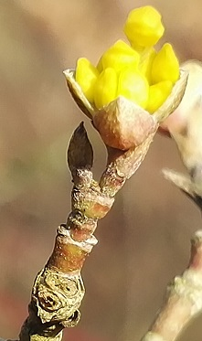
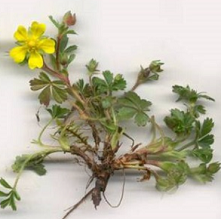
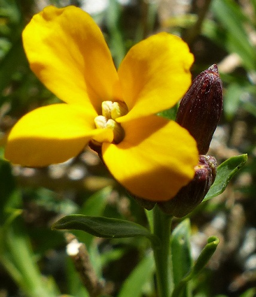

| FLSVY et d'ailleurs, un petit herbier virtuel de botanistes amateurs icaunais, donc de l'Yonne (un département), imaginé en 2005 par Claude Richard pour trouver rapidement le nom, latin ou français, d'une fleur où la reconnaître grâce à sa couleur... dans une forêt par exemple, un écosystème si complexe. |
|
|
| À consulter sur smartphone en le faisant presque toujours basculer en mode paysage et en "pinçant pour zoomer" si besoin : |
|  |
| Accueil ► |
Tandis que les grues cendrées, Grus grus (Linnaeus, 1758),
se font entendre,
Cornus mas, le cornouiller mâle déploit ses pétales.
 
5 mars 2018 - Lucy-sur-Cure
Et Potentilla verna ne va pas tarder à ouvrir ses pétales échancrés
 |
| Pétale : un mot à découvrir ! |
 La Paix est Une Fleur. La Paix est Une Fleur.
Que sont devenues Ses Graines
en 2024 ?
Un frelon à pattes jaunes
est-il plus important qu'elle en 2025 ? |
| C'est désormais également ailleurs que dans l'Yonne que cet herbier virtuel (nommé plus brièvement FLSVY) vous offre ses découvertes, aussi bien dans l'espace (puisque dans une région tempérée de nombreuses familles botaniques ne sont pas représentées) que dans le temps, et pourquoi pas la poésie... |
L'ortie aux morsures aiguës,
La bardane aux larges contours,
Sous les ombelles des ciguës,
Prospèrent dans l'angle des cours.
Théophile Gautier (1811-1872) |
| Pas toutes ses découvertes cependant, pleines de curiositas, ce désir de connaître quand bien même on ne peut pas tout savoir ni comprendre par exemple ce qui perdure encore au XXIe siècle. |

Erysimum cheiri (L.) Crantz, 1769,
la giroflée des murailles |
| Giroflé, girofla - Rosa Holt (1935) |
Quel étonnement en découvrant qu'une épithète spécifique d'origine géographique ait pu défrayer la chronique en 2024 pour des raisons d'offenses racistes, à l'exemple de caffra !
Mal nommer un objet c'est ajouter au malheur de ce monde, car le mensonge est justement la grande misère humaine, c'est pourquoi la grande tâche humaine correspondante sera de ne pas servir le mensonge avait écrit Brice Parrain (1897-1971). Qu'en est-il de l'incompréhension du latin botanique, ce jargon professionnel ? |
Bienvenue ►
Welcome / Bienvenidos / Välkommen / Benvenuto
добро пожаловать / مَرْحَبا
いらっしゃいませ / 欢迎
բարի գալուստ |
|